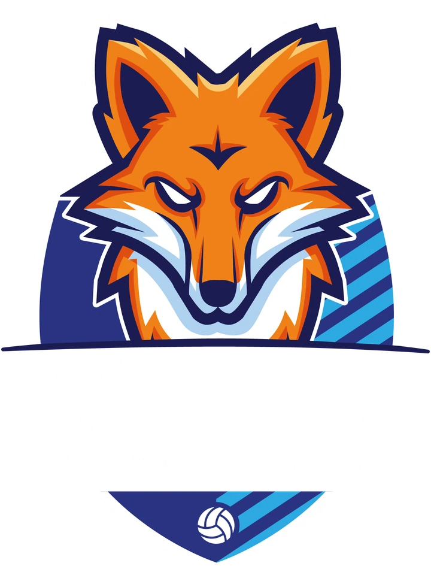

DATI FIPAV
Caricamento dello stato dati…
Per avviare una nuova raccolta direttamente dai portali FIPAV occorre essere gestore del repository GitHub.
Su GitHub premi Run workflow, poi di nuovo Run workflow. Torna qui: l'app controllerà la nuova pubblicazione.